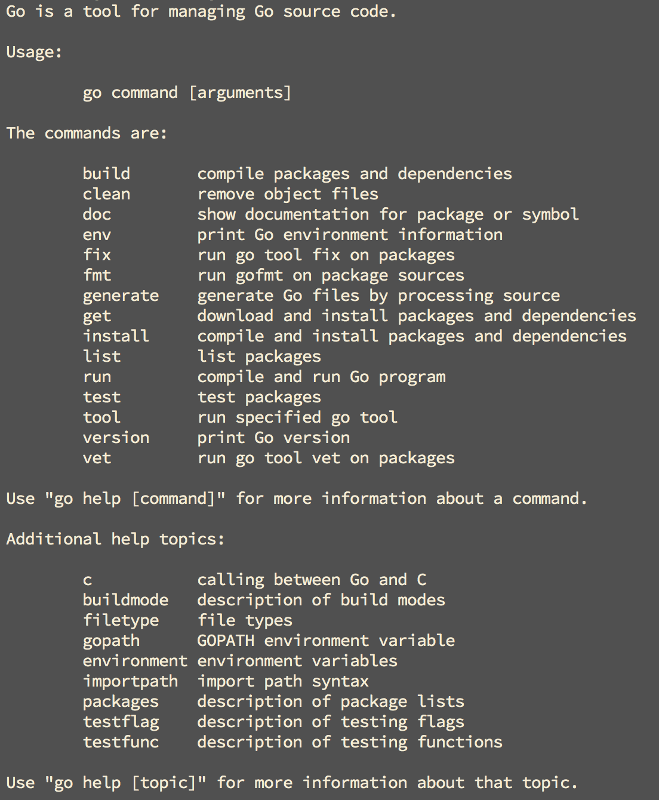

go安装
安装有多种方式
linux / unix /maxos 安装
linux install
此方式为使用以编译二进制压缩包安装64位 go
安装步骤:
下载go 安装好
// 按照系统保本和go 版本更改链接 $ wget https://storage.googleapis.com/golang/go1.8.3.linux-amd64.tar.gz解压到
/usr /local$ sudo tar -C /usr/local -xzf go1.8.3.linux-amd64.tar.gz修改
PATH 环境变量$ vim ~/.profile # 或者 ~/.bashrc // 添加: export PATH=$PATH:/usr/local/go/bin(可选) 设置
GOPATH// go1.8及后续版本在没有设置GOPATH时，会默认以$HOME/go为GOPATH // GOPATH为你的工作目录，其可以为任意合法目录 $ vim ~/.profile # 或者 ~/.bashrc // 添加: export GOPATH=$HOME/go然后进行检测, 执行
go

上图是 linux 系统下安装成功后执行 go 显示的信息
如果出现 go 的 usage 信息. 那么 go 已经安装成功了
如果痴线该命令不存在, 那么可以检查一下自己的path 环境变量中 是否存在go 的安装目录
Mac OS 安装
建议使用 HomeBrew 安装
// 安装go
brew install go
// 更新go
brew upgrade go
- 安装过程大同小异, 会自动安装 go 的最新稳定版本, 因为我已经安装好了没有截图, 所以剽窃了一张别人, 好让大家有个参考

- 出现上面的结果就表示安装成功了，我们在终端输入*go version*查看我们的安装版本，我的显示go version go1.10.2 darwin/amd64，表示我安装的是v1.10.2版本。
配置 gopath
- 查看 go 的环境变量设置的命令
go env
结果
GOARCH="amd64" GOBIN="" GOCACHE="" GOEXE="" GOHOSTARCH="amd64" GOHOSTOS="darwin" GOOS="darwin" GOPATH="" GORACE="" GOROOT="/usr/local/Cellar/go/1.10.2/libexec" GOTMPDIR="" GOTOOLDIR="/usr/local/Cellar/go/1.10.2/libexec/pkg/tool/darwin_amd64" GCCGO="gccgo" CC="clang" CXX="clang++" CGO_ENABLED="1" CGO_CFLAGS="-g -O2" CGO_CPPFLAGS="" CGO_CXXFLAGS="-g -O2" CGO_FFLAGS="-g -O2" CGO_LDFLAGS="-g -O2" PKG_CONFIG="pkg-config" GOGCCFLAGS="-fPIC -m64 -pthread -fno-caret-diagnostics -Qunused-arguments -fmessage-length=0 -fdebug-prefix-map=/var/folders/cf/lgqwwx4x1xs3rgp5rn0vz41h0000gn/T/go-build392342221=/tmp/go-build -gno-record-gcc-switches -fno-common"命令行
cd ~ vim .bash_profile //新增 xport GOROOT=/usr/local/opt/go/libexec export GOPATH=$HOME/.go export PATH=$PATH:$GOROOT/bin:$GOPATH/bin测试:
vim hello.go // hello.go package main import "fmt" func main() { fmt.Printf("Hello, world!") }
Windows 安装
按照系统对应下面下载地址下载：
- 32位系统下载 go1.8.3.windows-386.msi
- 64位系统下载 go1.8.3.windows-amd64.msi
双击打开下载的文件，一路按照默认点击下一步即可。